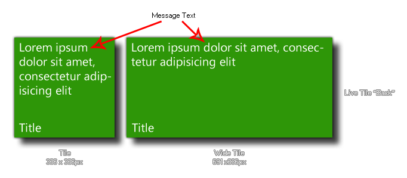

winphone_tile_back_content(string);
| Argument | Description |
|---|---|
| string | A message to be shown on the tile back. |
Returns: N/A
With this function you can assign a message string to the back
of the Flip Live Tile associated with your game. This
message will only be shown if your tile is classed as being a "flip
tile" with a "front" and a "back", in which case this message
string will be shown when the tile flips to the "back", as shown in
the following image:

if os_type = os_winphone
{
winphone_tile_title("Catch The Haggis");
winphone_tile_back_title("MacSweeney Games");
winphone_tile_back_content("You have played this
game for " + string(time) + " minutes!");
}
The above code will set both the front and the back title for the games Live Tile to the given strings, as well as add a message to be displayed when the tile "flips" to the back.